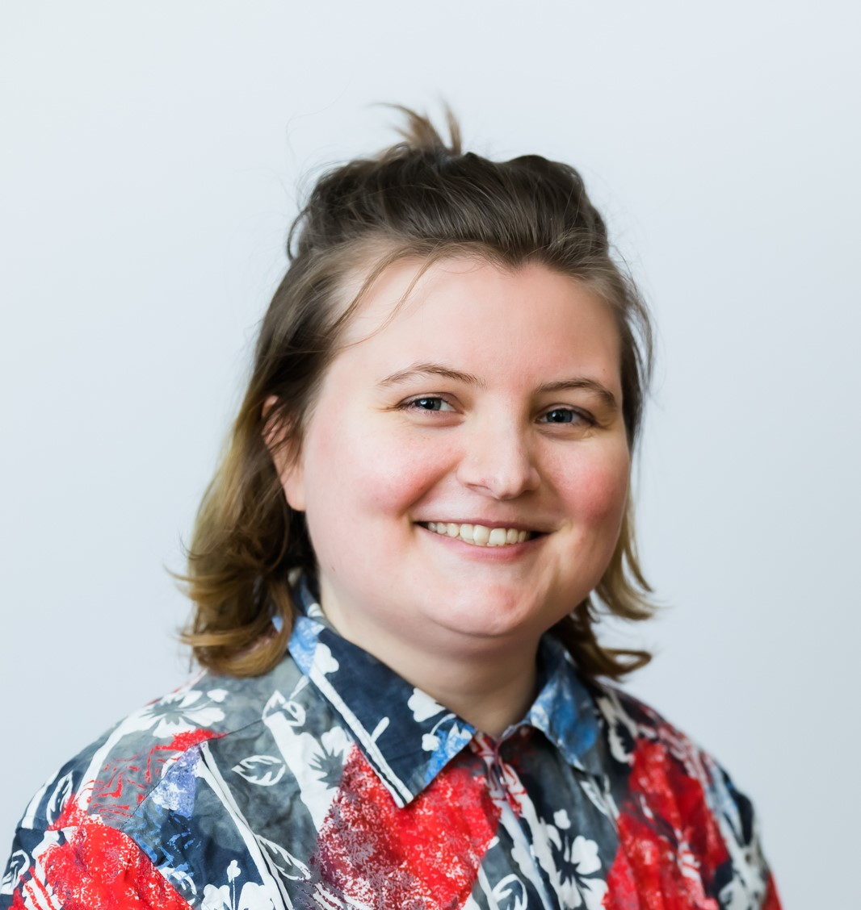

My name is Sonja, also known as faltzuthewiz. I am a Finnish business IT graduate and a junior software developer. This is my portfolio site.
I started my journey to become a software developer in the beginning of 2021. I was a fairly fresh Management Assistant graduate (my major was 'meetings and events'. I graduated a couple months after the pandemic started. "Yippee!") and I had been working as an assistant for a few years. I had realized that my true passion involves technology, always has. I attended some online courses and did the exercises whenever I could while having a fulltime job. In 2021–2022 I was volunteering as a mobile app developer for the Finnish Scouts Association.
In the spring 2022 I quit my job as an assistant, so I could focus on studying IT. I decided to get a bachelor's degree from the field of IT in Haaga-Helia University of Applied Sciences - the very same place where I got my first BBA degree.
I majored in software development, but I have also been doing some courses related to networks, information security, software testing and AI. I graduated in 2025, with a GPA of 4.57 of 5.00.
Combining studies and work was not always easy, but I was able to get experience from different IT jobs while studying. In my first semester in 2022, I had a short internship as a web developer, when I built a TKI.fi website for Arene – the Rectors' Conference of Finnish Universities of Applied Sciences with WordPress Elementor. I have worked in IT Help Desk in summer 2023. The next summer I worked in the IT Department of HUS, the biggest healtcare provider in Finland, as a application engineer intern.
During 2025 I made my thesis to HUS about using open source software libraries. During that time I became more interested in open source software in general. I graduated in 2025 with excellent grades.
Shortly after graduation, my dream to become a software developer was fulfilled! I'm currently working as a junior software developer at Ahkio Consulting Oy. I'm specializing in Odoo ERP development.
In free time, I love reading comics and spending time in the nature. I also love playing and learning about video games, and especially watching other people play old Nintendo games. One of my passions has been developing alcohol-free student culture and that's why I started a geek student club when I studied my first degree. I started a blog in 2025.
In 2026, I'm training for a 5K run, saving for an apartment and writing to my blog every now and then.
My long-time plans are becoming an ICT professional, publishing a comic and owning a summer cottage in the countryside.